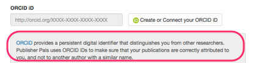

7. DISPLAY: PRESENTING ORCID IN YOUR SYSTEM
Display ORCID iDs
Researchers want to know that using their iD in your system has had some effect. The best way to signal that the collected iD is actually put to use is to display it - in your web applications, in publications, with funding awards, etc.
Show the iD icon followed by the full iD URI, linked to the iD URI, with or without the https scheme:
.gif) https://orcid.org/0000-0002-1825-0097
https://orcid.org/0000-0002-1825-0097
For more details, see our Trademark and iD Display Guidelines

Presenting the ORCID OAuth screen & redirect pages
In order to provide a consistent experience for users, we recommend following the guidelines below for presenting ORCID OAuth in your system. For more details, see our help doc on Presenting OAuth.
1. Use a button or link to connect users to ORCID via OAuth

2. Include text describing ORCID and a link to the ORCID website
See sample text

3. Present the OAuth sign-in screen as a popup or modal window
The OAuth screen is designed to look best at a maximum width of 500px.

4. Provide an appropriate redirect page and close the OAuth window
Remember that users can either authorize or deny access - make sure to show a different message for each case.